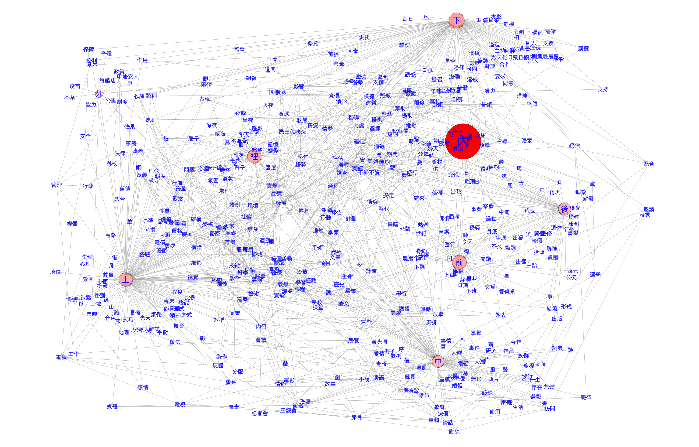

語言中的語意網絡
陳正賢 (Alvin Chen)
國立台灣師範大學英語系
陳正賢 (Alvin Chen)
國立台灣師範大學英語系
2021年06月28日
背景
詞彙語意表達
一個詞彙的語意，該怎如何定義和表徵 (Representation)？
- 指涉(Meaning by reference)
- 比較(Meaning by contrast)
- 使用(Meaning by uses)
語言單位間的共現性(Co-occurrence)
不同語言單位之間的共現，一直是語言學家關心的議題。
- 詞彙間的搭配關係(Collocation)
- 詞彙與句構間的搭配關係(Colligation, Collostruction)
隨著語料庫方法發展成熟，字串間的相連性(sequentiality)，成為詞彙語意(lexical semantics)研究的重要基礎。
透過大量語料中的共現關係(Co-occurrence patterns)，分析詞彙語意，定義其語意表徵(Semantic Representation)。
透過語境所取得的詞彙分散式語意表徵(Distributed Semantic Representation)，成為近年來語意分析研究的重要議題。(如：顯著搭配詞、詞向量[Word Embeddings])。
分散式語意表徵 (Distributional Hypothesis)
- 語言單位之間的共現關係(Co-occurrence patterns)成為分散式語意表徵(Distributed Semantic Representation)學習的重要基礎。
You shall know a word by the comany it keeps. (Firth, 1957, p.11)
[D]ifference of meaning correlates with difference of distribution. (Harris, 1970, p.785)
句構有語意嗎？
John baked me a cake.
- 「Transfer」的語意從何來呢？
句構如同詞彙
一個句構亦帶有其特殊語意成分。
[G]rammatical knowledge represents a continuum on two dimensions, from the substantive to the schematic and from the atomic to the complex. This continuum is widely referred to as the syntax-lexicon continuum. (Croft & Cruse, 2004, p.255-6)
或許我們語法知識中儲存句構，就像儲存一般詞彙一樣。
「做一個 X 的動作」
「報復性 X 」
「被 + \(\text{Verb}_{intransitive}\)」
「被 __ 耽誤了的 __ 」
「恐 + X 」
「動作動詞」
- 傻眼、直搖頭、一探究竟、坦言、直呼
「報導動詞」
- 網友笑稱、網友直呼、網稱、網譏、網酸、網友怒嗆、網友飆罵、網友反酸
怎麼表達句構語意呢？
- 完整的語法網絡知識，除了詞彙的語意表徵以外，應該也必須包含「句構(construction)」語意。
- 但，該如何表徵一個抽象（或是半抽象）的句構語意？
詞彙和句構相互連結

語意就在語法網絡裡
- 語言即詞彙與句構的排列組合
- 每一個詞彙或句構，隨著語言使用習慣，都擁有各自喜好一同使用詞彙或句構。
- 而這些一同出現的語言情境，也成了這些詞彙或句構的語意痕跡。
空間構式
以中文「空間句構」為例
- 中文表達空間概念時，經常使用以下句構：
「在 + 參考物體 + 空間方位詞」
- 在…期限內
- 在…條件下
- 在…比賽中
- 在…情感上
空間句構語意表徵的關鍵？
一個抽象句構大概更難直接說出它「意義」為何。
但，句構的語意，可從句構與其他語言單位之間的共現性，一窺端倪(Distributed Semantic Representation)：
- 句構與詞彙間的連結：哪些詞彙經常與特定空間句構共同使用？
- 詞彙與詞彙間的連結：出現在空間句構中的詞彙裡，哪些詞彙語意較為相近？哪些詞彙語意距離較遠？
- 句構與句構間的連結：哪些空間句構語意相似？哪些空間句構語意距離較遠？（如：「在 ＋… + 內」、「在 ＋… + 下」、「在 ＋… + 後」）
語料庫學習
語料庫成為語言共現的寶藏盒
- 以上三種連結，是構成我們語法知識網絡的重要基礎，透過大量語料庫資料，我們可以利用量化方法學習並模擬這三種連結，重現一個句構的語意網絡(Semantic Network)。
- 我們可利用「網絡分析方法(network science)」，進一步以圖像方式呈現句構與其他詞彙間的互動關係，即語法知識網絡(Grammatical Network)。
- Barabási, Albert-László. (2016). Network Science. Cambridge University Press.
- Diessel, Holger. (2019). The Grammar Network: How Linguistic Structure is Shaped by Language Use. Cambridge University Press.
句構與詞彙之連結
- Collostruction Analysis
- Collexeme Analysis
- Co-varying Collexeme Analysis
- Distinctive Collexeme Analysis
- Stefanowitsch, A. & Gries, S.T. 2003. Collostructions: Investigating the interaction of words and constructions. International Journal of Corpus Linguistics, 8(2), 209-243.
- Gries, S. T., & Stefanowitsch, A. 2004. Co-varying collexemes in the into-causative. Language, Culture, and Mind, 225-236.
- Gries, S. T., & Stefanowitsch, A. 2004. Extending collostructional analysis: A corpus-based perspective on alternations’. International Journal of Corpus Linguistics, 9(1), 97-129.
詞彙與詞彙之連結
- 詞彙與詞彙之間存在許多不同類型的語意關係，形成「詞網(WordNet)」（如：情況, 情形, 狀況, 環境)。
- 詞彙關係(Lexical Relations)可由兩種方式取得：
- 以字典手動方法(如: WordNet)
- 透過語料庫詞彙分佈，以自動化方式計算
深度學習之「詞向量」
透過深度學習方法，以非監督式方式，學習詞彙的分散式向量表徵，通常稱為「詞向量(Word Embeddings)」
詞向量模型的學習目標任務為，學習每一個詞彙的數值向量表徵，且此向量表徵能夠有效預測：
- 在特定語境中，可能出現的特定詞彙\(W_i\)為何？(Continuous Bag-of-Words)
- 針對一個特定詞彙\(W_i\)，有哪些詞彙會與其共同出現於同一語境中？(Skip-Gram)
詞彙、搭配詞和語意
- 簡言之，詞向量學習仰賴大型語料庫中，詞彙之間的共現關係作為訓練基礎。
- 此範例是根據中央研究院漢語對話語料庫計算。
| 叔叔 | 阿姨 | 男孩 | 女孩 | 爺爺 | 奶奶 | 爸爸 | 媽媽 | 兒子 | 女兒 | |
|---|---|---|---|---|---|---|---|---|---|---|
| 叔叔 | 2 | 0 | 0 | 1 | 2 | 1 | 10 | 7 | 1 | 1 |
| 阿姨 | 11 | 7 | 0 | 0 | 1 | 4 | 2 | 3 | 3 | 0 |
| 男孩 | 0 | 0 | 7 | 29 | 0 | 0 | 0 | 4 | 1 | 1 |
| 女孩 | 0 | 0 | 0 | 15 | 0 | 0 | 0 | 9 | 2 | 1 |
| 爺爺 | 0 | 0 | 0 | 0 | 23 | 0 | 20 | 11 | 2 | 1 |
| 奶奶 | 0 | 0 | 1 | 0 | 59 | 8 | 14 | 13 | 1 | 1 |
| 爸爸 | 0 | 0 | 0 | 0 | 0 | 0 | 62 | 336 | 0 | 0 |
| 媽媽 | 0 | 0 | 0 | 0 | 0 | 0 | 0 | 100 | 0 | 0 |
| 兒子 | 0 | 0 | 0 | 0 | 0 | 0 | 18 | 9 | 20 | 38 |
| 女兒 | 0 | 0 | 0 | 0 | 0 | 0 | 13 | 28 | 0 | 31 |
詞向量讓我們能夠將詞彙語意做實際數值運算。
從語料庫到網絡
空間句構網絡
個別網絡(一)

個別網絡(二)

語法知識語意網絡(Grammar Network)
三個層次網絡
- Macroscopic分析：觀察整個網絡特質
- Microscopic分析：觀察每一個節點的特質
- Mesoscopic分析：觀察網絡結點間群集特質
語意網絡對應分析
結合網絡分析方法(Network Science)，我們可以透過句構的網絡，分析句構語意：
- 每一個空間句構中，典型(prototypical)的參考物體為何？
- 每一個空間句構中，其共現的參考物體有無語意共通性(semantic cohesiveness)？
- 在整個中文空間句構中，是否有明顯的語義場(Semantic fields)？每個語意場與每個空間概念的互動為何？
透過統計學習方法，更可從網絡中，學習「句構」的抽象分散式語意表徵(Representation Learning)。（如：DeepWalk, node2vec)
- Chami, I., Abu-El-Haija, S., Perozzi, B., Ré, C., & Murphy, K. (2020). Machine Learning on Graphs: A Model and Comprehensive Taxonomy. arXiv preprint arXiv:2005.03675.
Macroscopic分析
- 無尺度網絡(Scale-free):
- 在一個網絡中，僅有少數幾個節點擁有豐富對外連結，大多數的節點的連結數都很少，且此現象不會隨著整個網絡大小而改變。
- 小世界網絡(Small-world):
- 在一個網絡中，常有聚集成堆的小群體，它們彼此之間的連結強度，比與其他小群體中的節點還有來的緊密。
- Small-world: 代表語法網絡部分語言單位（詞彙或句構），因語意或語用相近，群集成堆。
- Scale-free: 代表語法網絡裡的語意群集，僅有少數幾個高連結(high-degree)的節點，成為語意群集的「exemplar」。
Miscroscopic分析
- Local Cluster Coefficient: 可看出某個node，其所鄰近的nodes，彼此之間的連結程度。
- Centrality：可看出在一個網絡中，重要的nodes有哪些？
空間詞（句構）Nodes的Local Coefficient，代表與該句構一同出現的詞彙彼此間之語意相關度。

參考物體(詞彙) Nodes的Centrality，代表哪些物體為句構中代表性詞彙。
Mescoscopic分析
- 透過網絡分析，尋找網絡中的小群集(Community Detection)。
- 群集的產生，代表某個特定語意場域(Semantic Field)的形成。
結語
- 語法表徵 (Grammar Knowledge Representation) 可視為一個由不同層次語言單位交織而成的語法網絡 (Grammar Network) 。
- 網絡不僅可以勾勒詞彙間的連結，更可成為語言構式的語意表徵方法。
- 網絡源自於語言使用，未來可透過更多網絡分析法，觀察特定場域的語法網絡生成：
- 第一語言學習者 (Child Language Acquisition)
- 第二語言學習者 (Second Language Acquisition)
- 特定社群語言使用者 (Online Forums)
- 特定文化場域語言使用者 (Political Discourse Analysis)
感謝聆聽!
參考資料：Chen, Alvin Cheng-Hsien. In press. Words, constructions and corpora: Network representations of constructional semantics for Mandarin space particles. Corpus Linguistics and Linguistic Theory 19(1). https://doi.org/10.1515/cllt-2020-0012